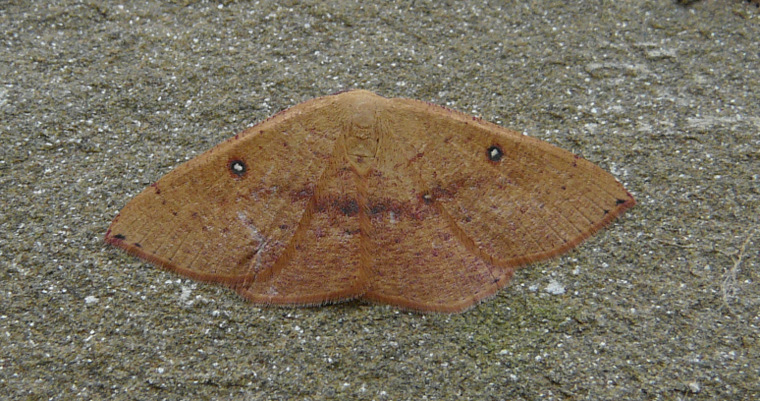
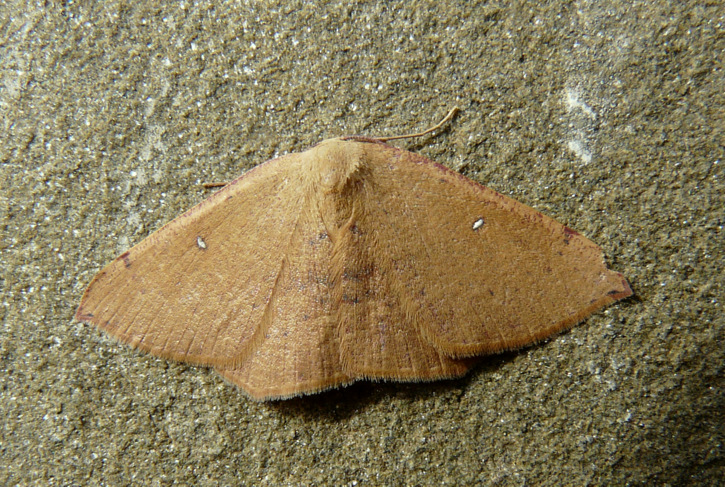

| PHRYGANA | Fauna | Flora |
additions nouveautés |
espèces species |
contact -
info - commentaires phrygana1 (at) gmail.com |
| diversité crétoise -- Cretan diversity | |||||
| Cyclophora (Cyclophora) puppillaria (Hubner 1799) |
| 111 | Fauna | GEOMETRIDAE | Sterrhinae | Cyclophora Hubner 1822 |
 Cyclophora puppillaria Melambes (Agios Giorgos) 10 mars 2010 |
| fr: l'Ephyre pupillée en: Blair's mocha | |
| Envergure: 28 -36 mm. | |
| Couleur de fonds brun clair à brun rouge, avec la "pupille" blanche bien marquée. | |
| Chenille polyphage: Quercus ilex, Quercus ithaburensis, Quercus coccifera, Cistus sp., Myrtus communis, Phillyrea angustifolia, Erica sp., Arbutus unedo. | |
| Chrysalide attachée sous une feuille. | |
| Espèce plurivoltine | |
| Période de vol: janvier février mars avril mai septembre octobre | |
| Statut en Crète: indigène | |
| Biotopes en Crète: phrygana, garrigue, chênaies, maquis | |
| Distribution: Europe méridionale et centrale, Asie mineure, Afrique du Nord. | |
| Note: l'adulte vient à la lumière. | |
|
 Cyclophora puppillaria Melambes (Agios Giorgos) 16 janvier 2010 |
| 18 septembre 2011 |
| © paul fontaine -- © Phrygana.eu 2007 -- 2013 |